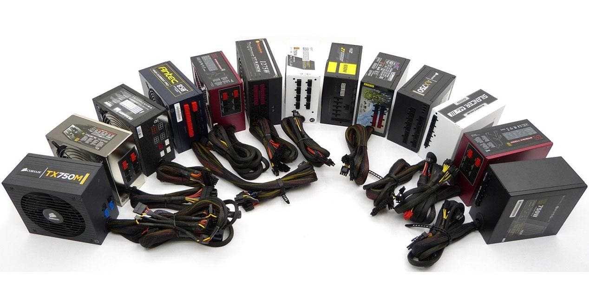

Entrada/Salida
En informática, un periférico de entrada/salida o E/S (en inglés: input/output o I/O) es aquel tipo de dispositivo periférico de un computador capaz de interactuar con los elementos externos a ese sistema de forma bidireccional, es decir, que permite tanto que sea ingresada información desde un sistema externo, como emitir información a partir de ese sistema. Los Dispositivos Periféricos de entrada son todos aquellos dispositivos que permiten introducir datos o información en una computadora para que esta los procese u ordene.
Funciones.
Un periférico de E/S es el que se utiliza para ingresar (E) datos a la computadora, y luego de ser procesados por la unidad central de procesamiento (CPU), genera la salida (S) de información. Su función es leer o grabar, permanente o virtualmente, todo aquello que se haga con la computadora, para que pueda ser utilizado por los usuarios u otros sistemas.

Tipos.
Dispositivos o periféricos de comunicación entre computadoras, tales como módems y tarjetas de red, por lo general sirven para entrada y salida. También, los dispositivos de almacenamiento de datos, como los discos rígidos, la unidad de estado sólido, las memorias flash, las disqueteras, entre otros, se pueden considerar periféricos de entrada/salida.
Ejemplos:
- Multitáctil.
- Casco virtual.
- Impresora multifunción.
Almacenamiento de datos.
En ocasiones, se consideran periféricos de E/S a los dispositivos de almacenamiento de datos, por ejemplo, las lectograbadoras de discos ópticos, 'lectoras' de tarjetas de memoria, discos duros portátiles o externos, memorias USB o memorias flash, etcétera.
Dispositivos de redes.
También, los dispositivos de redes o de comunicación, suelen considerarse periféricos de E/S porque su función es la interacción o interconexión entre dos o más computadoras, o entre la computadora y otro periférico externo. Ejemplos: módem, tarjeta de red, concentrador, conmutador (dispositivo de red), enrutador, comunicación inalámbrica, bluetooth.
3.2.2 Almacenamiento.
Conforme la tecnología avanza, más datos se van generando, por lo que es necesario contar con un almacenamiento eficiente para poder guardar toda esa información y acceder a ellos. El almacenamiento de datos ha cambiado mucho, desde los sistemas de disco, que muy probablemente se sigan utilizando, pero de una forma más digital: hoy se encuentran conectados a una red y son definidos por un software.
El almacenamiento de datos tiene un proceso a través del uso de la tecnología, ésta se aplica para organizar, distribuir y archivar información con los bytes y los bits que son parte de los sistemas de los que la gente depende día con día, llega a ser tan importante en todos los servicios: desde una simple aplicación, contenido multimedia, direcciones, contactos, hasta protocolos de red y todo lo que tiene que ver con el mundo digital.
Memoria contra almacenamiento.
Generalmente, los usuarios de computadoras tienden a confundir los términos “memoria” y “almacenamiento” pues los emplean de manera indistinta, utilizándolos para referirse a la RAM (o memoria principal) o al disco duro. Desde el punto de vista técnico, ambos términos son prácticamente iguales pues tanto la RAM como el disco duro se utilizan para almacenar información, claro está, de formas distintas y para propósitos diferentes.
Mientras la memoria se refiere a la ubicación de los datos a corto plazo, el almacenamiento es el componente de su computadora que le permite almacenar y acceder a datos a largo plazo. Usualmente, el almacenamiento se da en forma de una unidad de estado sólido o un disco duro. El almacenamiento le permite acceder y almacenar sus aplicaciones, sistema operativo y archivos por un tiempo indefinido.
Una diferencia importante entre memoria y almacenamiento es que la primera se borra cuando se apaga la computadora. Por otro lado, el almacenamiento permanece intacto no importa cuántas veces se apague la computadora.
Por lo tanto, en la analogía del escritorio y el archivador, cualquier archivo que quede en su escritorio cuando salga de la oficina se botará. Todo lo que esté en su archivador se mantendrá igual.
Almacenamiento en sistemas informáticos.
Un dispositivo de almacenamiento es un hardware que se utiliza principalmente para almacenar datos. Cada computadora de escritorio, computadora portátil, tablet y smartphone tendrán algún tipo de dispositivo de almacenamiento en su interior y también puedes obtener unidades de almacenamiento externo independientes que se pueden utilizar en varios dispositivos.
- Unidades de discos duros (HDD).
- Discos de estado sólido (SSD).
Dispositivos de almacenamiento externo.
Además de los medios de almacenamiento contenidos en una computadora, también hay dispositivos de almacenamiento digital que son externos a las computadoras. Se utilizan comúnmente para ampliar la capacidad de almacenamiento cuando una computadora se queda sin espacio, para permitir una mayor portabilidad y para facilitar la transferencia de archivos de un dispositivo a otro.
- Unidades de discos duros y discos de estado sólido externos.
- Dispositivos de memoria flash (unidades USB y tarjetas SD).
- Dispositivos de almacenamiento óptico (CD, DVD y discos Blu-Ray).
- Disquetes.
Almacenamiento en la nube.
Aunque no es exactamente un dispositivo en sí mismo, el almacenamiento en la nube es el tipo de almacenamiento más nuevo y versátil para las computadoras. “La nube” no es un lugar u objeto, sino un enorme conjunto de servidores alojados en centros de datos de todo el mundo. Cuando guardas un documento en la nube, lo estás almacenando en estos servidores.
Debido a que todo se almacena en línea, el almacenamiento en la nube no utiliza ningún almacenamiento secundario de la computadora, lo que te permite ahorrar espacio.
3.2.3 Fuentes de Alimentación.
Una fuente de alimentación es un componente esencial de cualquier dispositivo electrónico ya que es ella quien se encarga de darle vida. En cualquier equipo, por pequeño que sea, siempre hay una fuente de alimentación, aunque no la veamos.
En los ordenadores de sobremesa, la fuente de alimentación se encuentra generalmente en la parte inferior de la torre (en cajas antiguas se encuentra en la superior), y muchas cajas de ordenador optan por incorporar un compartimento para separarla del resto y ya de paso ocultar todos los cables salientes de ella.
Existen fuentes de alimentación modulares y semi-modulares, de manera que los cables son total o completamente desmontables. De esta manera, una fuente de alimentación modular mejora el flujo de aire del PC ya que solo cuenta con los cables que se necesitan.
Una fuente de alimentación sirve para dar energía a un dispositivo electrónico. Siguiendo con el tema de los ordenadores de sobremesa, la fuente de alimentación da energía a la placa base, CPU, tarjetas gráficas, HDDs, SSDs, ventiladores, lectores de CDs. En resumen, alimenta a todo lo que necesite energía, para ello hace uso de diferentes tipos de cables.
Un cable de 24 pines ATX es el que va a la placa base, para la CPU podemos encontrar cables de hasta 8+8 pines (se conocen como conectores de 12 V EPS) y para las tarjetas gráficas se utilizan conectores PCIe en configuraciones de hasta 8+8+8+8 para las gráficas más potentes, aunque habitualmente se usan 2 o 3 de ellos únicamente. Con las NVIDIA RTX 30 Founders Edition, el fabricante ha habilitado un nuevo conector molex de 12 pines, pero traen el correspondiente adaptador así que no hay problemas de incompatibilidad.
Las fuentes de alimentación proporcionan energía a los SSD y HDD mediante conectores SATA de energía, y a los ventiladores mediante conectores molex de 3 o 4 pines o bien mediante la propia placa base (que es alimentada con el conector de 24 pines ATX). De esta manera, todos los componentes reciben energía de la fuente de alimentación. Además, las fuentes protegen a todos los componentes mediante una gran cantidad de sistemas dedicados a ello.
Existen fuentes de alimentación que no requieren de ventilación, por lo que su refrigeración es completamente pasiva. Estos modelos suelen ser fuentes de medio-bajo voltaje con una alta eficiencia, para que el calor generado sea menor y se pueda llevar a cabo su disipación sin usar ni un solo ventilador acoplado a la fuente, con los que existan en la caja serán más que suficiente.